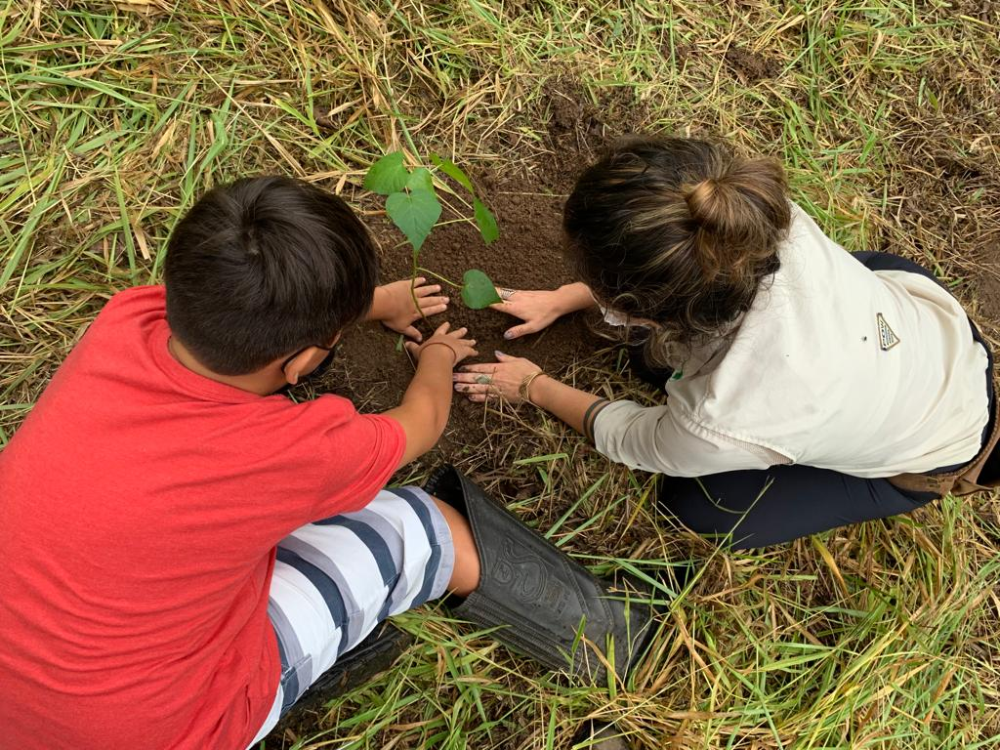
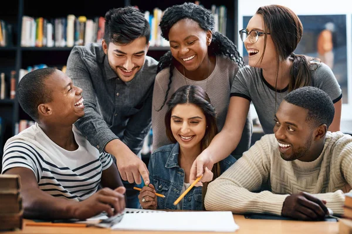
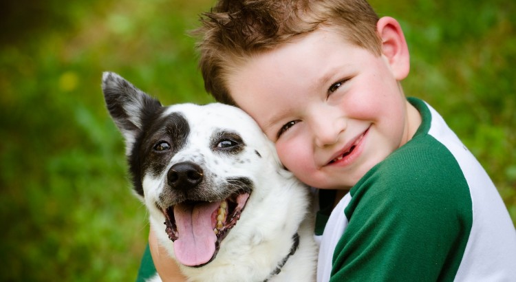
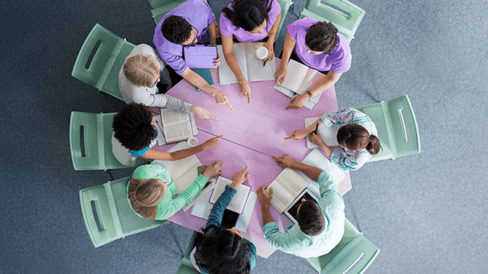
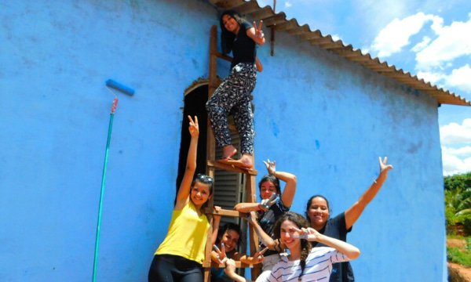

Projeto Verde Vivo
Iniciativa voltada à preservação ambiental, com ações de plantio de árvores, coleta seletiva e campanhas educativas sobre sustentabilidade nas comunidades locais.
Educação para o Futuro
Projeto que promove oficinas e cursos gratuitos para jovens e adultos, incentivando o aprendizado contínuo e o desenvolvimento de habilidades para o mercado de trabalho.
Projeto Amigos dos Animais
Com foco na proteção animal, este projeto promove campanhas de adoção, vacinação e conscientização sobre cuidados com os pets. Trabalhamos para reduzir o abandono e incentivar o respeito à vida animal.
Projeto Água Limpa

O Projeto Água Limpa busca levar acesso à água potável e conscientizar sobre o uso responsável dos recursos hídricos. Realizamos mutirões de limpeza em rios e praias, além de oficinas educativas.
Projeto Conecta Comunidades
Voltado à inclusão social, esse projeto cria uma rede de apoio entre comunidades, compartilhando recursos, informações e oportunidades de emprego. A meta é fortalecer laços locais e promover a cooperação entre bairros.
Projeto Reconstrói Esperança
Iniciativa voltada à reforma de casas e espaços comunitários em situação precária. Contamos com voluntários e parceiros que ajudam na reconstrução de moradias, trazendo dignidade e conforto para famílias necessitadas.